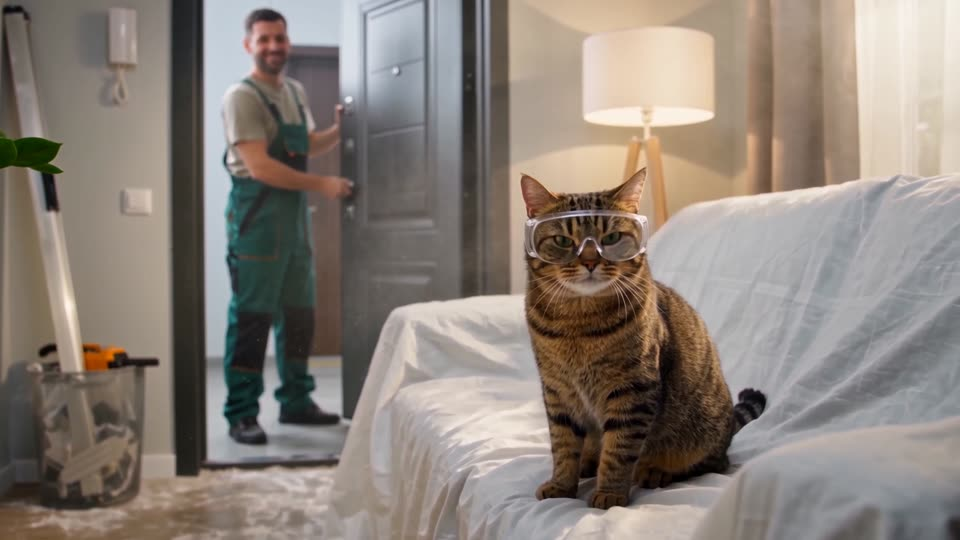
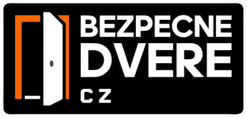

Bude to slyšet (vrtání a bourání staré zárubně) a na chodbě se může trochu zaprášit. Montéři po sobě samozřejmě uklidí.


Bezpečnostní dveře do bytu i domu, výměna během jediného dne. Jsme tu od roku 1996.
Vzorkovna KK SYSTEM, Obchodní 36, Most
+420 725 559 235 · www.bezpecne-dvere.cz